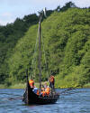
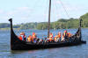
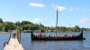
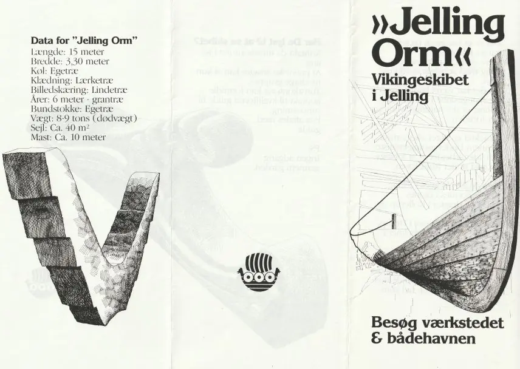
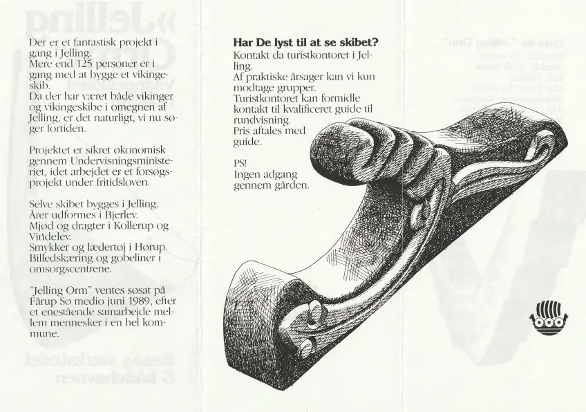
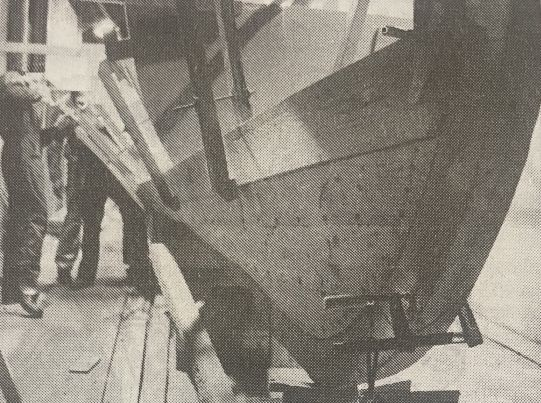
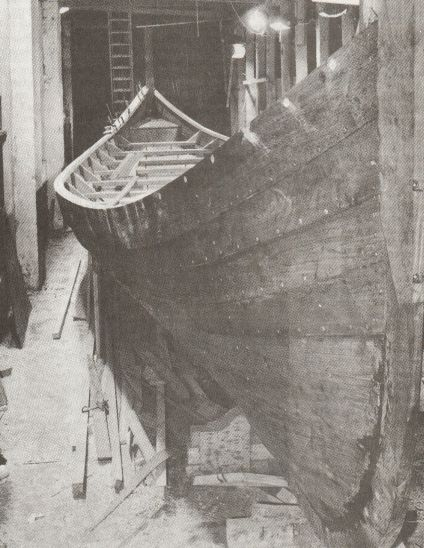
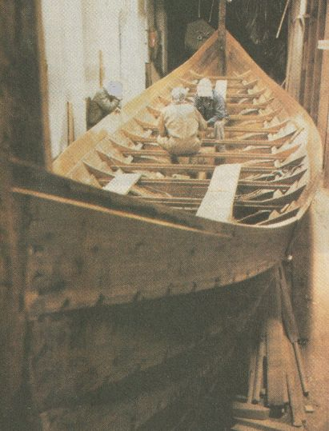

Fårup See - Jelling Orm - Letztes Update 06.10.2025
Navidaten: Fårupvej 46, 7300 Jelling, Dänemark - oder: 55.73852 9.41678
Im Rahmen meiner 2022er Jütland Wikinger Tour habe ich am Samstag, 18.06.2023, gegen 11.15 Uhr, von Jelling kommend nach ca. 2,5 km den südlich gelegenen Fårup See aufgesucht. Dort liegt der freie Nachbau eines Wikingerschiffes - der Jelling Orm.
Ich hatte Glück, denn das Schiff - leider ohne gehisstes Segel - befand sich gerade von einer Ausfahrt kommend in Richtung Bootsanleger. Dabei konnte ich dieses Manöver beobachten und natürlich auch diese Fotos machen.
  


Das Schiff wurde in einer zentral gelegenen Scheune in Jelling gebaut. Etwa 20 Leute hämmerten, sägten, hobelten und setzten Nieten an zwei Abenden die Woche mit idealistischem Eifer und guter Laune.
In einer Werkstatt im Dorf Bjerlev, 7 km von Jelling entfernt, wurden Riemen, Dollen und das Ruder verarbeitet. Im Dorf Hygum, 4 Kilometer von Jelling entfernt, sind Mast, Schilde und Sitze gefertigt worden.
Die Arbeiten am Jelling Orm durfte man sich auch anschauen, wie dieses Prospekt aus jener Zeit bestätigt (von mir eingescannt - 13.07.2023).


Der Stapellauf soll am 05.06.1990 stattgefunden haben. In den Ausgaben von "Jelling Touristinformation" aus dem Jahr 1988 und 1990 habe ich diese Fotos eingescannt (13.07.2023), die den Bau des Jelling Orm festgehalten haben.



Hier noch einige Daten zum dem Schiff:
Bauzeit: 1986 - 1990
Länge: 15 m
Breite: 3,12 m
Tiefgang: ca. 60 Zentimeter
Masthöhe: 9,7 m
Segelfläche: ca. 36 m2
Gewicht: ca. 3,5 Tonnen plus 1,5 Tonnen Ballast
Mindestbesatzung 5 Personen / maximal 26 Personen / max. 14 Ruderer, kann mit 5-6 Ruderern gefahren werden
Im Mai 2023 musste das Schiff einer dringenden Renovierung unterzogen werden - Bilder dazu findet man hier. Dort sind auch noch andere Fotos zu dem Wikingerschiff eingestellt.
Man kann das Schiff auch anmieten - die Konditionen dazu findet ihr hier (Dauer ca. 2 Std / jeder erhält eine Schwimmweste / mindestens 10 Personen - maximal 25 Personen - an die Ruder dürfen nur Personen über 16 Jahre / Kosten pro Person 100 DKK = ca. 13,50 Euro).